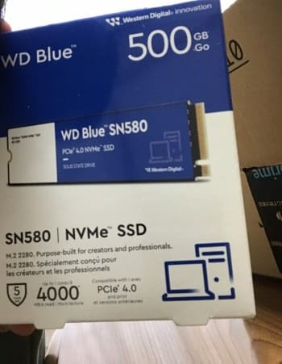
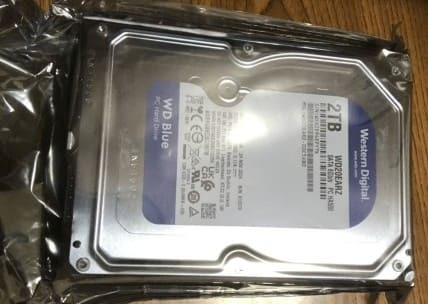

PC自作録 5.ストレージ購入
WDBlue WDS500G3B0E-EC
WDBlue WD20EaRZ-AJP
前回はこちら 次回はこちら
ストレージ選定
データの保存媒体の選定。
購入したマザーボード（詳細は
こちら）にはSATAが4ポート、M.2が4ポート（一箇所SATA方式）がある。
折角なので高速なストレージにOSをインストールして快適に動かしたい。
データストレージは大容量にしたい。
OSインストール用ストレージ
OSインストール用のストレージにはWDBlue WDS500G3B0E-ECを選んだ。
PCIE4.0対応の500GB NVMe SSDである。
本当は500GBもいらないと思ったのだがこれ以下の容量のM.2SSDは怪しいメーカーとかコスパが悪いやつとかなので500GBのこれを選んだ。
まあ快適に動いてくれれば問題ない。

価格はAmazonにて7150円。まあ良いんじゃないですか？（適当）
データ用ストレージ
データ用のストレージにはWDBlue WD20EaRZ-AJPのSATA HDDを選んだ。2TBのCMR方式ハードディスクである。
果たしてこの自分が2TBも使用するのかは疑問だが、ロマンでPCを組むので問題(しか)ないと思われる。

価格はAmazonにて11000円くらい。まあ普通かな？
Amazonで俺が買ったところだと簡易包装だった。
でかい箱（他の商品も頼んでた）の中に小さい箱があり、その中にプチプチと密閉袋にくるまれてHDDが届いた。まあ問題なし
前回はこちら 次回はこちら
 湯豆腐のかたまり──Assemble Yudofu
湯豆腐のかたまり──Assemble Yudofu